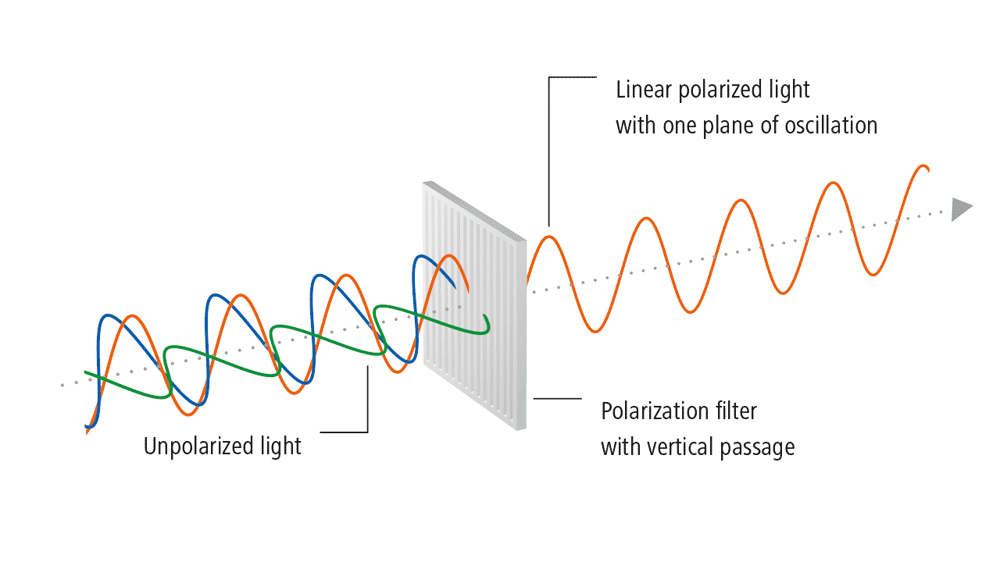
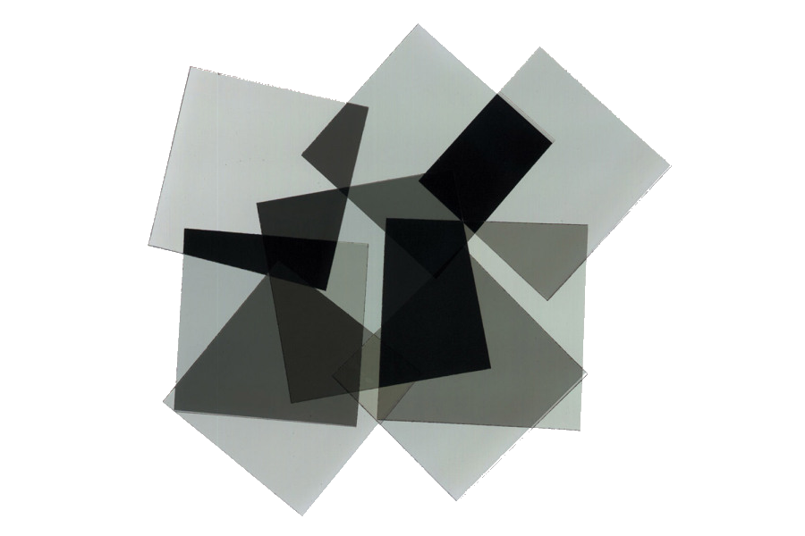

The Science Behind Omniphotics
Study the science behind Omniphotics
Polarization
Polarization refers to a specific way to filter out light. Light exibits behavior known as wave-particle duality, meaning that it has properties of both a particle and a wave. Light waves in varying directions, and polarizing filters allow us to only let through light that's waving in a specific direction. You can think of these as sine waves tilted at different angles, and a polarized filter only allows one tilt of sine wave to pass through. The less light that's let through, the darker it appears on the receiving side.
Polarized Lenses
Although light actually waves in many directions, it can be thought of as waving only horizontally and vertically. This creates the unique effect that when two polarized filters are held at right angles from one another, one will block horizontal light and the other will block vertical light, so in conjunction no light will be let through. Similarly, holding two polarized filters at 45° angles of one another will let through less light than what passes through just one filter, but not no light at all.
Omniphotics Science
Copyright © 2020 by A Nonexistant Inc.
Prior Edition © 2020 by An Equally Nonexistent Inc.
All rights not reserved. Any part of this website may be reproduced
without permission from the publisher, especially considering he is 17.